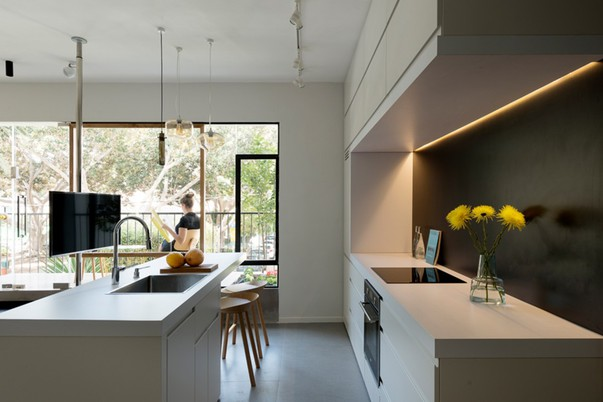
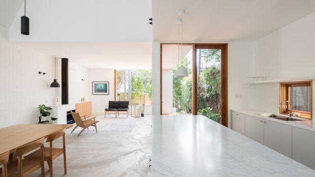

На фото: для небольшой квартиры оптимален интерьер в стиле минимализма. Белые стены и потолок – безошибочный ход по визуальному
расширению пространства. А использование черных деталей на этом фоне – верный способ придать интерьеру глубину.
Немногочисленные яркие акценты создают жизнерадостное настроение. Фото Gidon Levin 181 Architecture Photography.
© 4living.ru На фото: для небольшой квартиры оптимален интерьер в стиле минимализма. Белые стены и потолок
– безошибочный ход по визуальному расширению пространства. А использование черных деталей на этом фоне –
верный способ придать интерьеру глубину. Немногочисленные яркие акценты создают жизнерадостное настроение.
Фото Gidon Levin 181 Architecture Photography. © 4living.ru На фото: для небольшой квартиры оптимален интерьер
в стиле минимализма. Белые стены и потолок – безошибочный ход по визуальному расширению пространства. А использование
черных деталей на этом фоне – верный способ придать интерьеру глубину. Немногочисленные яркие акценты создают
жизнерадостное настроение. Фото Gidon Levin 181 Architecture Photography. © 4living.ru На фото: для небольшой
квартиры оптимален интерьер в стиле минимализма. Белые стены и потолок – безошибочный ход.



На фото: для небольшой квартиры оптимален интерьер в стиле минимализма. Белые стены и потолок – безошибочный ход по визуальному
расширению пространства. А использование черных деталей на этом фоне – верный способ придать интерьеру глубину.
Немногочисленные яркие акценты создают жизнерадостное настроение. Фото Gidon Levin 181 Architecture Photography.
© 4living.ru